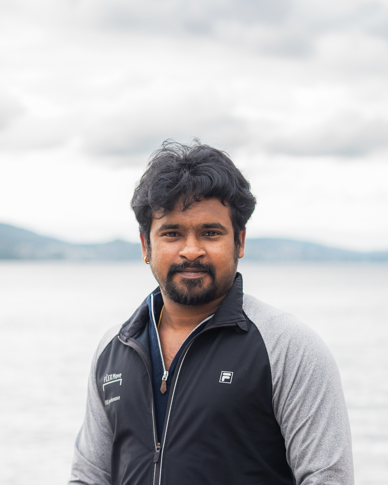

<!DOCTYPE html>
<html lang="en">
<head>
  <meta charset="UTF-8">
  <meta name="viewport" content="width=device-width, initial-scale=1.0">
  <title>Pratik Kad | About</title>
  <script src="https://cdnjs.cloudflare.com/ajax/libs/three.js/r128/three.min.js"></script>
  <script src="https://cdn.jsdelivr.net/npm/react@18.2.0/umd/react.production.min.js"></script>
  <script src="https://cdn.jsdelivr.net/npm/react-dom@18.2.0/umd/react-dom.production.min.js"></script>
  <script src="https://unpkg.com/@babel/standalone/babel.min.js"></script>
  <script src="https://cdn.tailwindcss.com"></script>
  <style>
    @keyframes fadeIn { from { opacity: 0; transform: translateY(20px); } to { opacity: 1; transform: translateY(0); } }
    .animate-fade-in { animation: fadeIn 0.8s ease-out; }
    body { font-family: 'Inter', sans-serif; line-height: 1.6; }
    .text-contrast { color: #ffffff; text-shadow: 0 0 4px rgba(0,0,0,0.5); }
    .swing { animation: swing 1s ease-in-out infinite alternate; }
    @keyframes swing { 0% { transform: rotate(-10deg); } 100% { transform: rotate(10deg); } }
  </style>
</head>
<body class="bg-gray-900 text-gray-100">
  <div id="root"></div>
  <script type="text/babel">
    const { useState } = React;

    // Navigation Component
    const Navbar = () => {
      const [isOpen, setIsOpen] = useState(false);
      const navItems = [
        { name: 'Home', href: 'index.html' },
        { name: 'Research', href: 'research.html' },
        { name: 'Publications', href: 'publications.html' },
        { name: 'Outreach', href: 'outreach.html' },
        { name: 'About', href: 'about.html' },
      ];

      return (
        <header className="fixed top-0 w-full bg-gray-900 bg-opacity-90 backdrop-blur-sm z-50">
          <div className="max-w-6xl mx-auto px-4 py-4 flex justify-between items-center">
            <div className="flex items-center space-x-3">
              <span className="text-3xl">🌍</span>
              <h1 className="text-xl font-semibold text-white">Pratik Kad</h1>
            </div>
            <nav className="hidden md:flex space-x-6">
              {navItems.map((item) => (
                <a
                  key={item.name}
                  href={item.href}
                  className="text-lg text-gray-300 hover:text-cyan-300 transition-colors duration-200"
                >
                  {item.name}
                </a>
              ))}
            </nav>
            <button
              className="md:hidden text-white focus:outline-none"
              onClick={() => setIsOpen(!isOpen)}
            >
              <svg className="w-8 h-8" fill="none" stroke="currentColor" viewBox="0 0 24 24">
                <path strokeLinecap="round" strokeLinejoin="round" strokeWidth="2" d={isOpen ? 'M6 18L18 6M6 6l12 12' : 'M4 6h16M4 12h16M4 18h16'} />
              </svg>
            </button>
          </div>
          {isOpen && (
            <div className="md:hidden bg-gray-900 bg-opacity-95 px-4 py-2">
              {navItems.map((item) => (
                <a
                  key={item.name}
                  href={item.href}
                  className="block py-2 text-lg text-gray-300 hover:text-cyan-300"
                  onClick={() => setIsOpen(false)}
                >
                  {item.name}
                </a>
              ))}
            </div>
          )}
        </header>
      );
    };

    // About Component
    const About = () => {
      const socialLinks = [
        {
          href: 'https://scholar.google.co.in/citations?user=AHFS0K8AAAAJ&hl=en',
          title: 'Google Scholar',
          svg: '<svg xmlns="http://www.w3.org/2000/svg" viewBox="0 0 48 48" width="32" height="32"><path fill="#4285F4" d="M24 4L4 24h8v16h8V28h8v12h8V24h8z"/></svg>',
        },
        {
          href: 'https://www.linkedin.com/in/pratikkad/',
          title: 'LinkedIn',
          svg: '<svg xmlns="http://www.w3.org/2000/svg" viewBox="0 0 24 24" width="32" height="32"><path fill="#0A66C2" d="M20.5 2h-17A1.5 1.5 0 002 3.5v17A1.5 1.5 0 003.5 22h17a1.5 1.5 0 001.5-1.5v-17A1.5 1.5 0 0020.5 2zM8 19H5v-9h3zM6.5 8.25A1.75 1.75 0 118.3 6.5a1.78 1.78 0 01-1.8 1.75zM19 19h-3v-4.74c0-1.42-.6-2.73-2.3-2.73-1.79 0-2.12 1.38-2.2 2.73V19H8V9.5h3.06v1.43c.58-.89 1.62-2.15 3.69-2.15 2.76 0 4.75 1.83 4.75 5.74V19z"/></svg>',
        },
        {
          href: 'https://orcid.org/0000-0002-0010-0891',
          title: 'ORCID',
          svg: '<svg xmlns="http://www.w3.org/2000/svg" viewBox="0 0 256 256" width="32" height="32"><circle cx="128" cy="128" r="128" fill="#A6CE39"/><path d="M86.6 89.5h17v76.9h-17V89.5zm8.5-35c5.6 0 10.2 4.6 10.2 10.2S100.7 75 95.1 75s-10.2-4.6-10.2-10.2 4.5-10.3 10.2-10.3zm36.6 35c22.6 0 41 18.4 41 41s-18.4 41-41 41h-18.8v-76.9h18.8zm0 17.4h-1.7v42.1h1.7c12.5 0 22.7-9.7 22.7-21.1s-10.2-21-22.7-21z" fill="#fff"/></svg>',
        },
        {
          href: 'https://www.researchgate.net/profile/Pratik-Kad',
          title: 'ResearchGate',
          svg: '<svg xmlns="http://www.w3.org/2000/svg" viewBox="0 0 24 24" width="32" height="32"><path fill="#00ccbb" d="M12 2C6.48 2 2 6.48 2 12s4.48 10 10 10 10-4.48 10-10S17.52 2 12 2zm-1.5 15.5h-1v-5h1v5zm2.5-1h-1v-4h1v4zm2.5-2h-1v-3h1v3zm-5-6.5c-.83 0-1.5.67-1.5 1.5s.67 1.5 1.5 1.5 1.5-.67 1.5-1.5-.67-1.5-1.5-1.5z"/></svg>',
        },
      ];

      return (
        <section id="about" className="py-16 bg-gray-900 min-h-screen">
          <div className="max-w-6xl mx-auto px-4">
            <h2 className="text-3xl md:text-4xl font-bold text-white text-center mb-12 animate-fade-in">About Me</h2>
            <div className="grid grid-cols-1 md:grid-cols-2 gap-8">
              <div className="animate-fade-in">
                
                <div className="flex justify-center gap-6 mt-6">
                  {socialLinks.map((link, index) => (
                    <a
                      key={index}
                      href={link.href}
                      target="_blank"
                      title={link.title}
                      className="text-cyan-300 hover:text-cyan-400"
                      dangerouslySetInnerHTML={{ __html: link.svg }}
                      onMouseEnter={(e) => e.currentTarget.classList.add('swing')}
                      onMouseLeave={(e) => e.currentTarget.classList.remove('swing')}
                    />
                  ))}
                </div>
                <div className="text-center mt-4">
                  <p className="text-gray-300">
                    <a href="mailto:prka@norceresearch.no" className="text-cyan-300 hover:underline">prka@norceresearch.no</a>
                  </p>
                  <p className="text-gray-300">
                    NORCE Norwegian Research Centre<br />
                    Bjerknes Centre for Climate Research<br />
                    Jahnebakken 5, 5007 Bergen, Norway
                  </p>
                </div>
              </div>
              <div className="animate-fade-in">
                <h3 className="text-xl font-semibold text-cyan-300 mb-2">Research Interests</h3>
                <p className="text-gray-300 mb-4">Atmospheric Science, Climate Change, Climate Dynamics, Mountain Meteorology, Physical Oceanography</p>

                <h3 className="text-xl font-semibold text-cyan-300 mb-2">Professional Service</h3>
                <ul className="list-disc text-gray-400 pl-5 mb-4">
                  <li>
                    <span className="text-cyan-300">Executive Committee Member</span> –{' '}
                    <a href="https://www.yess-community.org/members/community/pratik/" target="_blank" className="text-cyan-300 hover:underline">
                      Young Earth System Scientists (YESS) Community
                    </a>{' '}
                    (April 2025 – Present)
                  </li>
                  <li>
                    <span className="text-cyan-300">Member, Robust Information Working Group</span> –{' '}
                    <a href="https://www.wcrp-rifs.org/activities/working-groups/robust-information-working-group/" target="_blank" className="text-cyan-300 hover:underline">
                      WCRP Regional Information for Society (RifS)
                    </a>{' '}
                    (July 2024 – Present)
                  </li>
                </ul>

                <h3 className="text-xl font-semibold text-cyan-300 mb-2">Research Experience</h3>
                <ul className="list-disc text-gray-400 pl-5">
                  <li>
                    <span className="text-cyan-300">Postdoctoral Researcher (Regional Climate Modeling)</span> –{' '}
                    <a href="https://www.norceresearch.no/en/persons/pratik-kad/40144981" target="_blank" className="text-cyan-300 hover:underline">
                      NORCE Norwegian Research Centre
                    </a>{' '}
                    (February 2024 – Present)
                  </li>
                  <li>
                    <span className="text-cyan-300">Research Affiliate (Climate Hazards)</span> –{' '}
                    <a href="https://bjerknes.uib.no/en/user/176346" target="_blank" className="text-cyan-300 hover:underline">
                      Bjerknes Centre for Climate Research
                    </a>{' '}
                    (February 2024 – Present)
                  </li>
                  <li>
                    <span className="text-cyan-300">PhD Researcher</span> – Pusan National University, Republic of Korea (September 2018 – August 2023)
                  </li>
                  <li>
                    <span className="text-cyan-300">Graduate Student</span> – Indian Institute of Tropical Meteorology, Pune, India (September 2016 – August 2017)
                  </li>
                </ul>

                <h3 className="text-xl font-semibold text-cyan-300 mb-2">Education</h3>
                <ul className="list-disc text-gray-400 pl-5 mb-4">
                  <li>
                    <span className="text-cyan-300">PhD in Climate System</span> – Pusan National University, Busan, Republic of Korea (GPA 4.13/4.5, September 2018 – August 2023)
                  </li>
                  <li>
                    <span className="text-cyan-300">MSc in Atmospheric Science</span> – Savitribai Phule Pune University and Indian Institute of Tropical Meteorology, Pune, India (GPA 6.85/10, July 2015 – June 2017)
                  </li>
                  <li>
                    <span className="text-cyan-300">BSc in Physics</span> – Savitribai Phule Pune University, Pune, India (69.16%, July 2012 – June 2015)
                  </li>
                </ul>
              </div>
            </div>
          </div>
        </section>
      );
    };

    // Footer Component
    const Footer = () => {
      return (
        <footer className="py-8 bg-gray-800 text-center text-gray-400">
          <p>🌍✨ Exploring the World Through Science and Curiosity | Pratik Kad © 2025 All Rights Reserved</p>
        </footer>
      );
    };

    // Main App Component
    const App = () => {
      return (
        <div>
          <Navbar />
          <About />
          <Footer />
        </div>
      );
    };

    // Render the App
    ReactDOM.render(<App />, document.getElementById('root'));
  </script>
</body>
</html>
